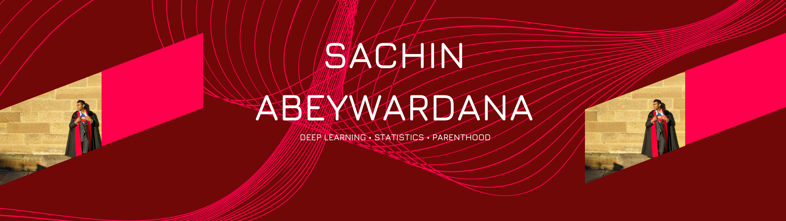

DeepSchool.ai

Hello, Welcome to my website! My name is Dr. Sachin Abeywardana, and thank you for stopping by.
I am a dedicated and experienced Deep Learning Engineer specializing in Natural Language Processing (NLP) and Computer Vision, offering my expertise as a consultant. With a deep passion for cutting-edge AI technologies, I have successfully tackled complex challenges and delivered transformative solutions for clients across diverse industries.
As a Lead Machine Learning Engineer at Canva, I have played a pivotal role in revolutionizing customer service at scale. Leveraging my expertise in NLP, I implemented a BERT model to classify feedback into over 250 categories, enhancing the efficiency and personalization of customer support. Furthermore, I fine-tuned GPT2 to generate content titles and developed advanced keyword generation techniques to optimize search capabilities. Leading a team of talented ML engineers, I also crafted comprehensive ML strategies tailored to the unique needs of Canva creators.
In my previous position as a Senior Machine Learning Engineer at Remi AI, I applied my skills to solve supply chain problems. By implementing state-of-the-art Deep Learning models, I successfully predicted demand across large volumes of data, driving effective decision-making. Additionally, I utilized ML algorithms for price optimization and provided guidance and mentorship to junior data scientists, fostering a collaborative environment focused on tackling complex ML challenges.
During my time at Data Processors, I delved into the realm of Computer Vision, employing Deep Learning techniques to improve sports betting models and develop innovative video analysis applications. These experiences allowed me to harness the power of visual data and extract valuable insights.
My academic background includes a Ph.D. in Bayesian Machine Learning from the University of Sydney, where I specialized in developing data modeling methods that combine statistics and programming. I have tackled various research problems, including quantile regression for forecasting worst-case losses and clustering for market segmentation.
In addition to my professional roles, I am an Udemy Instructor, leveraging my expertise to educate and empower aspiring data scientists and ML enthusiasts. Through this platform, I contribute to the growth and development of the ML community, sharing practical insights and best practices.
As a Deep Learning consultant, I am driven by a desire to apply my knowledge and skills to drive transformative outcomes for clients. I thrive in dynamic environments where innovation and collaboration are valued, and I am always eager to take on new challenges. With a strong foundation in both theoretical concepts and practical implementation, I am well-equipped to deliver customized, state-of-the-art solutions that push the boundaries of AI and Deep Learning.
Thank you for visiting my profile. I look forward to connecting with you and exploring opportunities to collaborate on projects that leverage the power of Deep Learning to drive tangible results. Together, we can unlock the full potential of AI and revolutionize your organization.